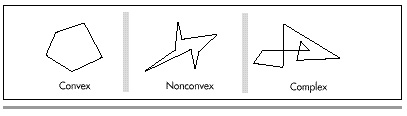
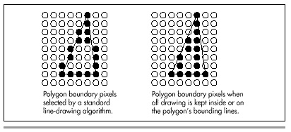

| Previous | Table of Contents | Next |
“Give me but one firm spot on which to stand, and I will move the Earth.”
—Archimedes
Were Archimedes alive today, he might say, “Give me but one fast polygon-fill routine on which to call, and I will draw the Earth.” Programmers often think of pixel drawing as being the basic graphics primitive, but filled polygons are equally fundamental and far more useful. Filled polygons can be used for constructs as diverse as a single pixel or a 3-D surface, and virtually everything in between.
I’ll spend some time in this chapter and the next several developing routines to draw filled polygons and building more sophisticated graphics operations atop those routines. Once we have that foundation, I’ll get into 2-D manipulation and animation of polygon-based entities as preface to an exploration of 3-D graphics. You can’t get there from here without laying some groundwork, though, so in this chapter I’ll begin with the basics of filling a polygon. In the next chapter, we’ll see how to draw a polygon considerably faster. That’s my general approach for this sort of topic: High-level exploration of a graphics topic first, followed by a speedy hardware-specific implementation for the IBM PC/VGA combination, the most widely used graphics system around. Abstract, machine-independent graphics is a thing of beauty, but only by understanding graphics at all levels, including the hardware, can you boost performance into the realm of the sublime.
And slow computer graphics is scarcely worth the bother.
A polygon is simply a shape formed by lines laid end to end to form a continuous, closed path. A polygon is filled by setting all pixels within the polygon’s boundaries to a color or pattern. For now, we’ll work only with polygons filled with solid colors.
You can divide polygons into three categories: convex, nonconvex, and complex, as shown in Figure 38.1. Convex polygons include what you’d normally think of as “convex” and more; as far as we’re concerned, a convex polygon is one for which any horizontal line drawn through the polygon encounters the right edge exactly once and the left edge exactly once, excluding horizontal and zero-length edge segments. Put another way, neither the right nor left edge of a convex polygon ever reverses direction from up to down, or vice-versa. Also, the right and left edges of a convex polygon may not cross one another, although they may touch so long as the right edge never crosses over to the left side of the left edge. (Check out the second polygon drawn in Listing 38.3, which certainly isn’t convex in the normal sense.) The boundaries of nonconvex polygons, on the other hand, can go in whatever directions they please, so long as they never cross. Complex polygons can have any boundaries you might imagine, which makes for interesting problems in deciding which interior spaces to fill and which not to fill. Each category is a superset of the previous one.
(See Chapter 41 for a more detailed discussion of polygon types and naming.)
Why bother to distinguish between convex, nonconvex, and complex polygons? Easy: performance, especially when it comes to filling convex polygons. We’re going to start with filled convex polygons; they’re widely useful and will serve well to introduce some of the subtler complexities of polygon drawing, not the least of which is the slippery concept of “inside.”
The basic principle of polygon filling is decomposing each polygon into a series of horizontal lines, one for each horizontal row of pixels, or scan line, within the polygon (a process I’ll call scan conversion), and drawing the horizontal lines. I’ll refer to the entire process as rasterization. Rasterization of convex polygons is easily done by starting at the top of the polygon and tracing down the left and right sides, one scan line (one vertical pixel) at a time, filling the extent between the two edges on each scan line, until the bottom of the polygon is reached. At first glance, rasterization does not seem to be particularly complicated, although it should be apparent that this simple approach is inadequate for nonconvex polygons.

Figure 38.1 Convex, nonconvex, and complex polygons.
There are a couple of complications, however. The lesser complication is how to rasterize the polygon efficiently, given that it’s difficult to write fast code that simultaneously traces two edges and fills the space between them. The solution is to decouple the process of scan-converting the polygon into a list of horizontal lines from that of drawing the horizontal lines. One device-independent routine can trace along the two edges and build a list of the beginning and end coordinates of the polygon on each raster line. Then a second, device-specific, routine can draw from the list after the entire polygon has been scanned. We’ll see this in action shortly.
The second, greater complication arises because the definition of which pixels are “within” a polygon is a more complicated matter than you might imagine. You might think that scan-converting an edge of a polygon is analogous to drawing a line from one vertex to the next, but this is not so. A line by itself is a one-dimensional construct, and as such is approximated on a display by drawing the pixels nearest to the line on either side of the true line. A line serving as a polygon boundary, on the other hand, is part of a two-dimensional object. When filling a polygon, we want to draw the pixels within the polygon, but a standard vertex-to-vertex line-drawing algorithm will draw many pixels outside the polygon, as shown in Figure 38.2.
It’s no crime to use standard lines to trace out a polygon, rather than drawing only interior pixels. In fact, there are certain advantages: For example, the edges of a filled polygon will match the edges of the same polygon drawn unfilled. Such polygons will look pretty much as they’re supposed to, and all drawing on raster displays is, after all, only an approximation of an ideal.

Figure 38.2 Drawing polygons with standard line-drawing algorithms.
There’s one great drawback to tracing polygons with standard lines, however: Adjacent polygons won’t fit together properly, as shown in Figure 38.3. If you use six equilateral triangles to make a hexagon, for example, the edges of the triangles will overlap when traced with standard lines, and more recently drawn triangles will wipe out portions of their predecessors. Worse still, odd color effects will show up along the polygon boundaries if XOR drawing is used. Consequently, filling out to the boundary lines just won’t do for drawing images composed of fitted-together polygons. And because fitting polygons together is exactly what I have in mind, we need a different approach.
| Previous | Table of Contents | Next |